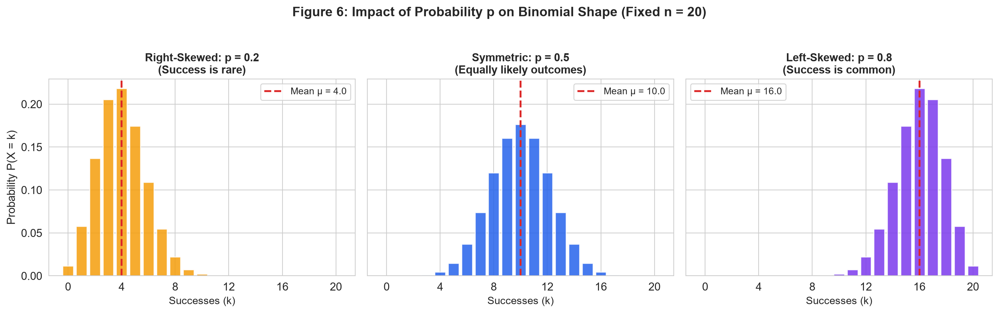
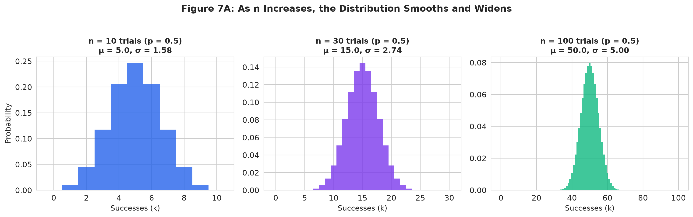
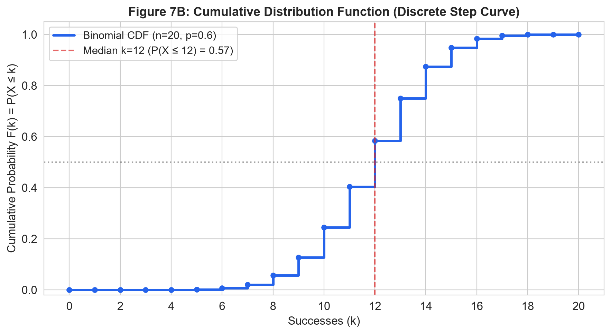
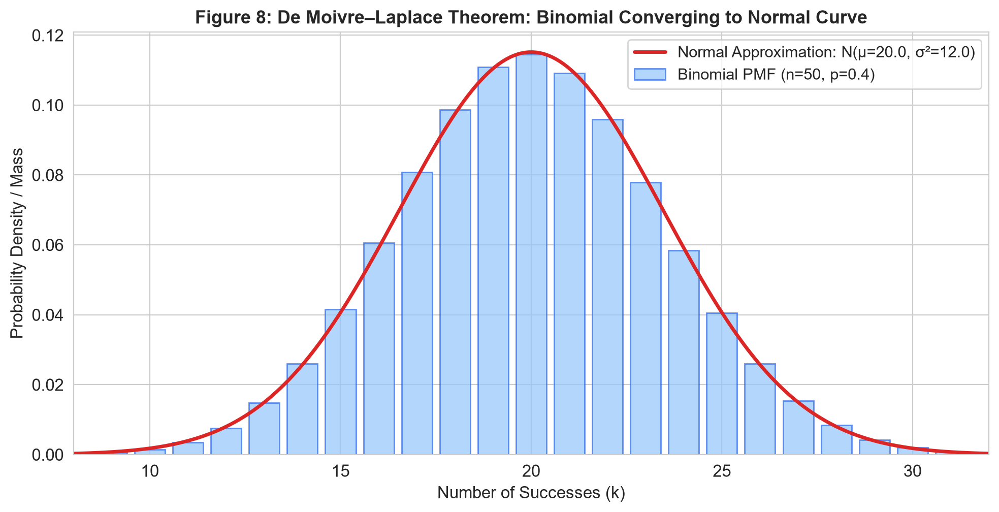
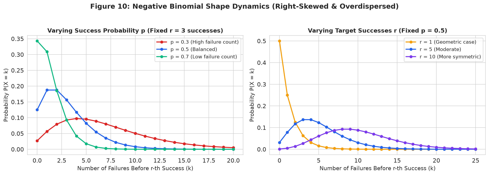
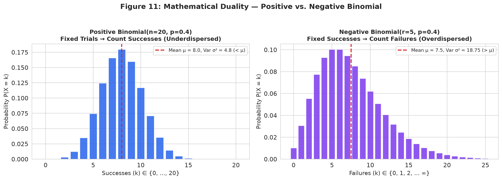
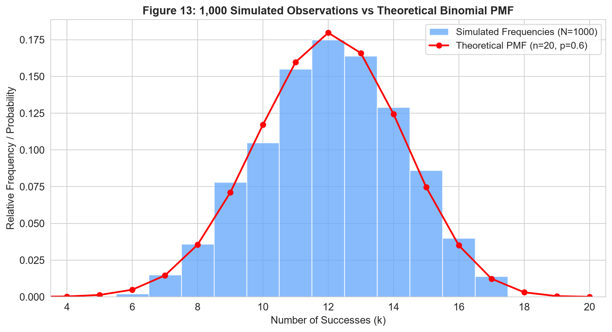
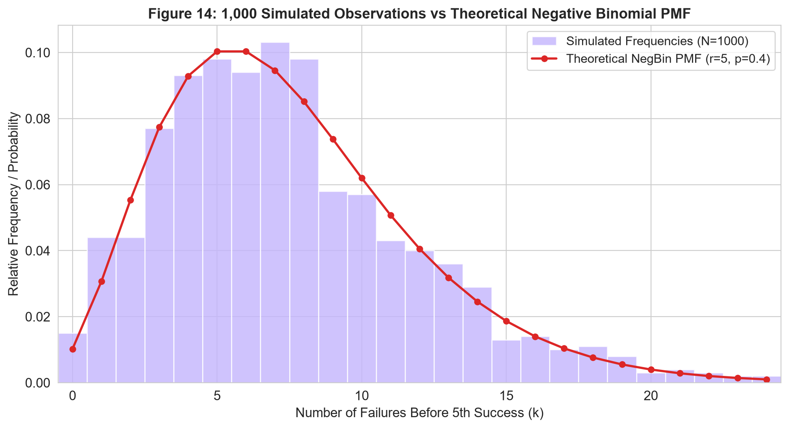

Mathematical Duality, Overdispersion Modeling, and Empirical Simulation
Group 8 | Probability Distributions & Statistical Modeling
When a data scientist understands the data-generating distribution, noise transforms into predictable structure.
Discrete Also called the Positive Binomial (from expanding $(p+q)^n$ with a positive exponent).
Models the probability of obtaining exactly $k$ successes across a predetermined number of $n$ independent trials, each with constant success probability $p$.
Exactly two outcomes: Success (1) or Failure (0).
Outcome of trial $i$ does not alter trial $j$.
Total trials $n$ is decided in advance.
Success rate $p$ remains constant across all trials.
| Symbol / Term | Statistical Role |
|---|---|
| n ∈ ℕ | Total number of independent trials conducted |
| k ∈ [0, n] | Specific count of successes being evaluated |
| p ∈ [0, 1] | Probability of success on any single trial |
| 1 − p | Probability of failure on any single trial |
| pk(1−p)n−k | Probability of any single sequence of $k$ successes |
| (nk) = n! / (k!(n−k)!) | Binomial coefficient: total unique combinations of $k$ successes |
By the Binomial Theorem, the sum of probabilities across all possible counts $k$ equals exactly 1.0:
∑k=0..n (nk) pk (1−p)n−k = [p + (1−p)]n = 1n = 1.0
Intuition: If an ad has a 5% click rate and is shown 1,000 times, we expect $1,000 \times 0.05 = 50$ clicks.
Derived by summing the independent variances of $n$ Bernoulli trials without covariance terms.
Linearity of Expectation: Because $X = \sum Y_i$, $E[X] = \sum E[Y_i] = np$ holds directly even if slight correlations exist.

As $n \to \infty$, the denominator grows, driving skewness toward zero regardless of $p$!



When $n$ is sufficiently large, calculating high-order factorials is computationally intensive. The theorem proves that the discrete Binomial distribution smoothly approaches a continuous Gaussian curve:
Continuity Correction: When integrating continuous area for discrete intervals, adjust bounds by $\pm 0.5$: $P(a \le X \le b) \approx P(a - 0.5 \le X_{\text{norm}} \le b + 0.5)$.
Instead of fixing trials n and counting successes, we fix target successes r and count how many failures k occur before the r-th success.
Why "Negative"? Derived from the negative-power expansion: (1 − q)−r = ∑ (k+r−1k) qk.
| Parameter / Term | Role |
|---|---|
| r > 0 | Fixed target number of successes |
| k ∈ {0, 1, 2, …} | Unbounded count of failures before r-th success |
| p ∈ (0, 1] | Constant probability of success per trial |
| (k+r−1k) | Arrangements of k failures & r−1 successes before final success |

Mean: μ = r(1 − p) / p | Variance: σ² = r(1 − p) / p² = μ + μ² / r
MLE Estimator: p̂MLE = r / (r + x̄)

| Property | Positive Binomial | Negative Binomial |
|---|---|---|
| Fixed | Trials n | Successes r |
| Counted (k) | Successes ∈ {0..n} | Failures ∈ {0..∞} |
| Expansion | (p + q)n | (1 − q)−r |
| Mean (μ) | np | r(1 − p) / p |
| Variance (σ²) | np(1−p) < μ | r(1−p)/p² > μ |
DESeq2, edgeR).
| Metric | Theoretical | Simulated (N=1,000) | Error |
|---|---|---|---|
| Mean (μ = np) | 12.0000 | 12.0720 | 0.0720 (0.60%) |
| Variance (σ²) | 4.8000 | 4.8076 | 0.0076 (0.16%) |
| Std Dev (σ) | 2.1909 | 2.1926 | 0.0017 (0.08%) |
| MLE Parameter (p̂) | 0.6000 | 0.6036 | 0.0036 (0.60%) |

| Metric | Theoretical | Simulated (N=1,000) | Error |
|---|---|---|---|
| Mean (μ) | 7.5000 | 7.4860 | 0.0140 (0.19%) |
| Variance (σ²) | 18.7500 | 20.0398 | 1.2898 (6.88%) |
| Std Dev (σ) | 4.3301 | 4.4766 | 0.1465 (3.38%) |
| Dispersion (σ²/μ) | 2.5000 | 2.6770 (> 1) | Overdispersed! |
| MLE Parameter (p̂) | 0.4000 | 0.4004 | 0.0004 (0.10%) |
Thank You! Questions & Discussion 🙋